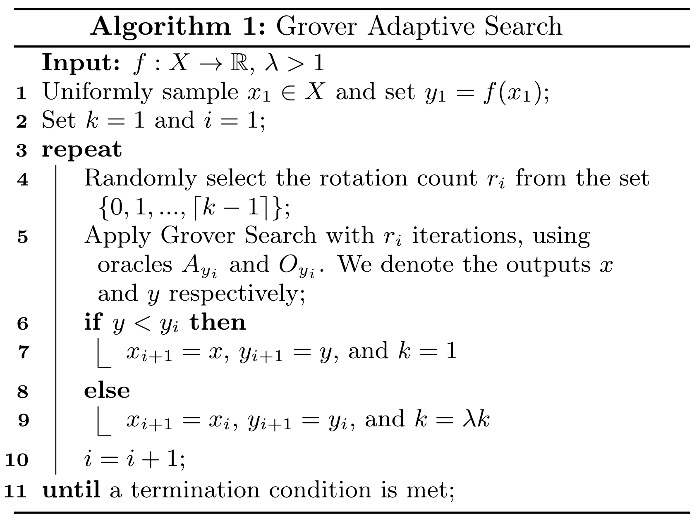
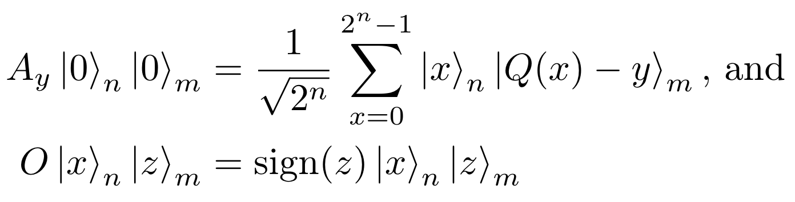
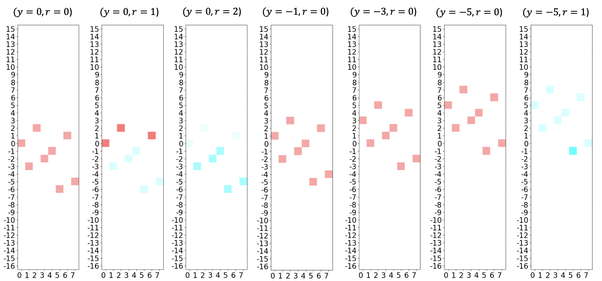

Nota
This page was generated from docs/tutorials/04_grover_optimizer.ipynb.
Grover Optimizer¶
Introduzione¶
Il Grover Adaptive Search (GAS) è stato analizzato come possibile soluzione per i problemi di ottimizzazione combinatoria, insieme ad algoritmi variazionali come il Variational Quantum Eigensolver (VQE) e il Quantum Approximate Optimization Algorithm (QAOA). L’algoritmo applica in modo iterativo la Grover Search per trovare il valore ottimo di una funzione obiettivo, usando il valore più noto della precedente esecuzione come soglia. L’oracolo adattivo usato in GAS riconosce tutti i valori sopra o sotto la soglia attuale (per max e min rispettivamente), diminuendo l’ampiezza dello spazio di ricerca ogni iterazione in cui la soglia viene aggiornata, fino a che non si trova un ottimo.
In questo notebook esploreremo ciascun componente del GroverOptimizer, che utilizza le tecniche descritte in GAS, attraverso la minimizzazione di un problema di Quadratic Unconstrained Binary Optimization (QUBO), come descritto in [1]
Riferimenti¶
Grover Adaptive Search¶
La Grover Search, elemento centrale del GAS, richiede tre ingredienti:
Un operatore \(A\) di preparazione dello stato per costruire una sovrapposizione di tutti gli stati nello spazio di ricerca.
Un operatore oracolo \(O\), che riconosce gli stati di interesse e moltiplica le loro ampiezze per -1.
L’operatore di diffusione di Grover \(D\), che moltiplica l’ampiezza dello stato \(|0\rangle_n\) per -1.
Sebbene le implementazioni del GAS differiscano in funzione del caso d’uso specifico, il framework generale comunque segue liberamente i passi descritti di seguito.

Il GroverOptimizer utilizza il QuadraticProgramToNegativeValueOracle per costruire \(A_y\) in modo da preparare un registro a \(n\)-qubit per rappresentare la sovrapposizione equivalente di tutti i \(|x\rangle_n\) e un registro a \(m\)-qubit per rappresentare (approssimativamente) il corrispondente \(|Q(x)-y\rangle_m\). Poi, tutti gli stati con \((Q(x) - y)\) negativo dovrebbero essere identificati da \(O_y\). Occorre notare che nell’implementazione discussa, l’operatore oracolo è in effetti indipendente da \(y\), ma non si tratta di un requisito. Per chiarezza, ci riferiremo all’oracolo come \(O\) quando l’oracolo è indipendente da \(y\).
In termini formali, QuadraticProgramToNegativeValueOracle costruisce un \(A_y\) e \(O\) tali che:

dove \(|x\rangle\) è la codifica binaria del numero intero \(x\).
Ad ogni iterazione in cui la soglia \(y\) è aggiornata, adattiamo \(A_y\) in modo tale che i valori della funzione sono spostati verso l’alto o il basso (rispettivamente per minimo e massimo) di \(A_y\). Ad esempio, nel contesto di ricerca del minimo, al decrescere del valore di :math:`y, anche lo spazio di ricerca (valori negativi) diminuisce, fino a quando non rimane solo il valore minimo. Un esempio concreto sarà esaminato nella prossima sezione.
Trovare il Minimo di un problema QUBO utilizzando GroverOptimizer¶
Di seguito un esempio semplice di un problema di minimizzazione.
\begin{eqnarray} \min_{x \in \{0, 1\}^3} -2x_0x_2 - x_1x_2 - 1x_0 + 2x_1 - 3x_2. \end{eqnarray}
Per iniziare, creiamo un modello docplex che definisce il problema descritto sopra, e quindi usiamo la funzione from_docplex_mp() per convertire il modello in un QuadraticProgram, che può essere utilizzato per rappresentare un QUBO in Qiskit Optimization.
[1]:
from qiskit.algorithms import NumPyMinimumEigensolver
from qiskit_optimization.algorithms import GroverOptimizer, MinimumEigenOptimizer
from qiskit_optimization.problems import QuadraticProgram
from qiskit_optimization.translators import from_docplex_mp
from qiskit import BasicAer
from docplex.mp.model import Model
backend = BasicAer.get_backend("statevector_simulator")
[2]:
model = Model()
x0 = model.binary_var(name="x0")
x1 = model.binary_var(name="x1")
x2 = model.binary_var(name="x2")
model.minimize(-x0 + 2 * x1 - 3 * x2 - 2 * x0 * x2 - 1 * x1 * x2)
qp = from_docplex_mp(model)
print(qp.prettyprint())
Problem name: docplex_model1
Minimize
-2*x0*x2 - x1*x2 - x0 + 2*x1 - 3*x2
Subject to
No constraints
Binary variables (3)
x0 x1 x2
Successivamente, creiamo un GroverOptimizer che utilizza 6 qubit per codificare il valore, e terminerà dopo che ci sono state 10 iterazioni del GAS senza progressi (es. il valore di \(y\) non cambia). La funzione solve() prende il QuadraticProgram che abbiamo creato in precedenza e restituisce un oggetto risultati che contiene informazioni sull’esecuzione.
[3]:
grover_optimizer = GroverOptimizer(6, num_iterations=10, quantum_instance=backend)
results = grover_optimizer.solve(qp)
print(results.prettyprint())
objective function value: -6.0
variable values: x0=1.0, x1=0.0, x2=1.0
status: SUCCESS
Questo si traduce nella soluzione ottimale \(x_0=1\), \(x_1=0\), \(x_2=1\) e il valore obiettivo ottimale di \(-6\) (la maggior parte del tempo, poiché è un algoritmo randomizzato). Nel seguente, una visualizzazione personalizzata dello stato quantico mostra una possibile esecuzione di GroverOptimizer applicata a questo QUBO.

Ogni grafico mostra una singola iterazione di GAS, con i valori correnti di \(r\) (= contatore di iterazione) e \(y\) (= soglia / offset) mostrata nel titolo. L’asse X visualizza l’equivalente intero dell’input (ad esempio “101” \(\rightarrow\) 5) e l’asse Y mostra i possibili valori della funzione. Poiché ci sono 3 variabili binarie, ci sono \(2^3=8\) possibili soluzioni, che vengono mostrate in ogni grafico. L’intensità del colore indica la probabilità di misurare un determinato risultato (dove ad intensità più brillante corrisponde una probabilità più alta), mentre il colore effettivo indica la fase corrispondente (vedi il cerchio cromatico relativo alla fase riportato qui sotto). Da notare che come \(y\) diminuisce, spostiamo tutti i valori di quella quantità, quindi ci sono sempre meno valori negativi nella distribuzione, fino a quando non rimane solo uno (il minimo).

Verificare che GroverOptimizer trovi il valore corretto¶
Possiamo verificare che l’algoritmo funzioni correttamente utilizzando MinimumEigenOptimizer in Qiskit.
[4]:
exact_solver = MinimumEigenOptimizer(NumPyMinimumEigensolver())
exact_result = exact_solver.solve(qp)
print(exact_result.prettyprint())
objective function value: -6.0
variable values: x0=1.0, x1=0.0, x2=1.0
status: SUCCESS
[5]:
import qiskit.tools.jupyter
%qiskit_version_table
%qiskit_copyright
Version Information
| Qiskit Software | Version |
|---|---|
qiskit-terra | 0.21.0.dev0+dbd3961 |
qiskit-aer | 0.10.4 |
qiskit-ibmq-provider | 0.19.1 |
qiskit-optimization | 0.4.0 |
| System information | |
| Python version | 3.10.4 |
| Python compiler | GCC 11.2.0 |
| Python build | main, Apr 2 2022 09:04:19 |
| OS | Linux |
| CPUs | 4 |
| Memory (Gb) | 14.577545166015625 |
| Wed May 18 16:03:53 2022 JST | |
This code is a part of Qiskit
© Copyright IBM 2017, 2022.
This code is licensed under the Apache License, Version 2.0. You may
obtain a copy of this license in the LICENSE.txt file in the root directory
of this source tree or at http://www.apache.org/licenses/LICENSE-2.0.
Any modifications or derivative works of this code must retain this
copyright notice, and modified files need to carry a notice indicating
that they have been altered from the originals.
[ ]: